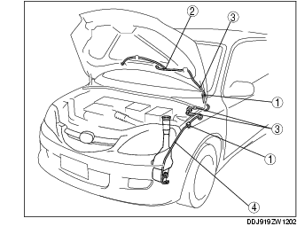

Windshield washer hose removal/installation
1. Remove the bonnet insulator. (See BONNET REMOVAL/INSTALLATION.)
2. Remove the cowl grille. (See COWL GRILLE REMOVAL/INSTALLATION.)
3. Slightly bend back the mudguard (LH).
4. Remove in the order indicated in the table.

5. Install in the reverse order of removal.